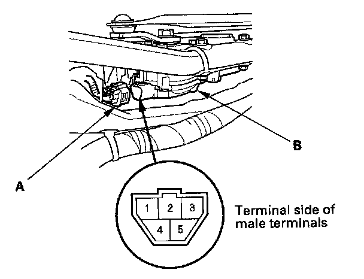

Wiper Motor Test
Wiper Motor Test1. Remove the wiper arms.
- 4-door
- 2-door
NOTE: Carefully remove the wiper arms so that they do not touch the hood.
2. Remove the hood seal and cowl cover.

3. Disconnect the 5P connector (A) from the wiper motor (B).
4. Test the motor by connecting battery power to the No.1 terminal and ground to the No.2 terminal of the wiper motor 5P connector.
The motor should run at low speed. If the motor does not run or fails to run smoothly, replace the motor.
5. Test the motor by connecting battery power to the No.4 terminal and ground to the No.2 terminal of the wiper motor 5P connector.
The motor should run at high speed. If the motor does not run, or fails to run smoothly, replace the motor.
6. Connect an analog ohmmeter to the No.5 and No.2 terminals, and run the motor at low or high speed. The needle of the ohmmeter should pulse. If it dose not, replace the motor.